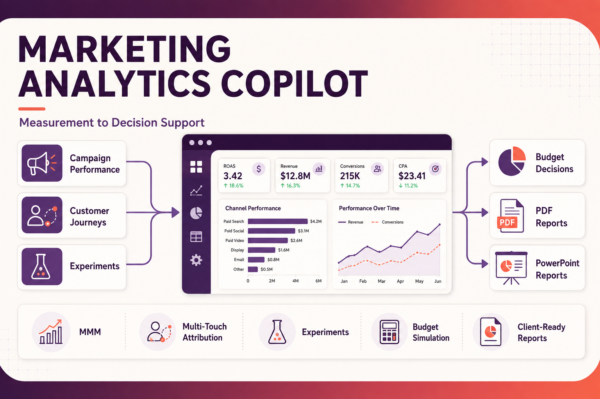

Marketing Measurement & Decision Science
Marketing Analytics Copilot
Production-style marketing measurement application combining campaign analytics, marketing mix modeling, multi-touch attribution, experimentation, budget simulation, and client-ready reporting.
View Case Study →